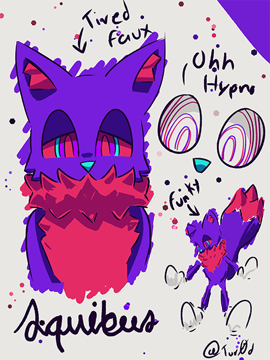
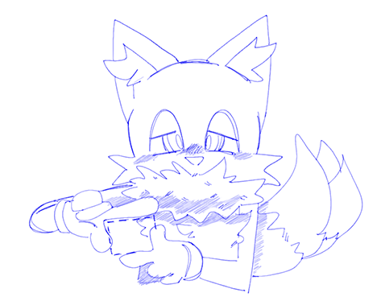

A SONIC OC? ARE YOU FUCKING KIDDING ME?

CLICK ON THUMBNAILS FOR FULL SIZED IMAGES
OH DEAR GOD WHAT IS THAT WHAT THE FUCK WHY WHY WHY WHY WHY
Oh no. It's a Sonic OC: the internet's greatest fear.
So let me introduce you to this creature who I have forced into existence against their own will:

Artwork above by the amazing @Tur0d on Twitter.
This is Axel, a Mobian fox. (who also may or may not be a fox because of my tails obsession sshh)
Axel has a very sleepy personality, hence the swirly eyes. Their voice will probably make you fall asleep, so be prepared to hear them talk about the Linux kernel for 3 hours. That is, unless they fall asleep mid conversation.
Their dreams are either insanely weird or literal nightmare fuel. There is no in-between.
Axel's fur is in a weird crystal-like pattern, kind of like Mephiles. Why are they purple? It mainly has to do with my obsession with that color, which is a recurring theme with my other OCs. I also really like pinkish-red, so that's why that's there.
They also like to hide their mouth under their insanely fluffy neck.
They try to act edgy but they fail really badly at trying to not act cute.

Artwork above by @CynikalTazumu on Twitter.